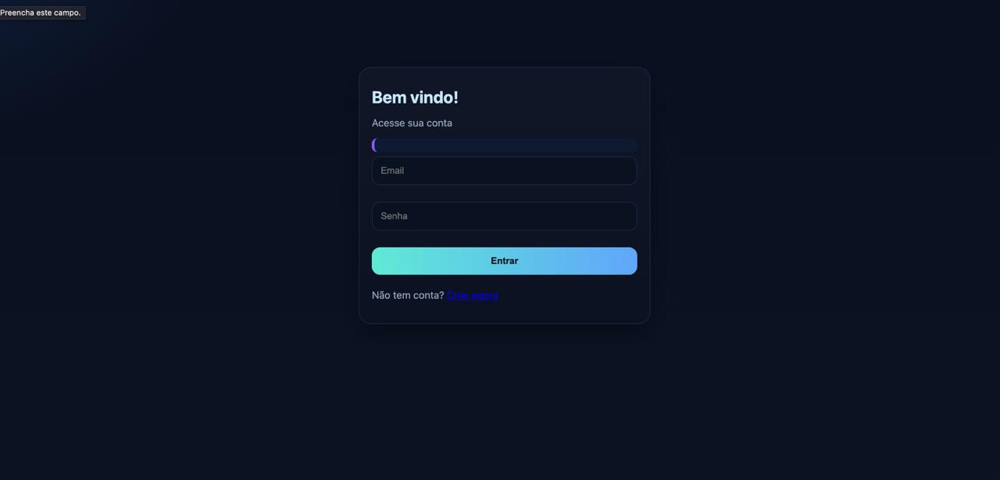
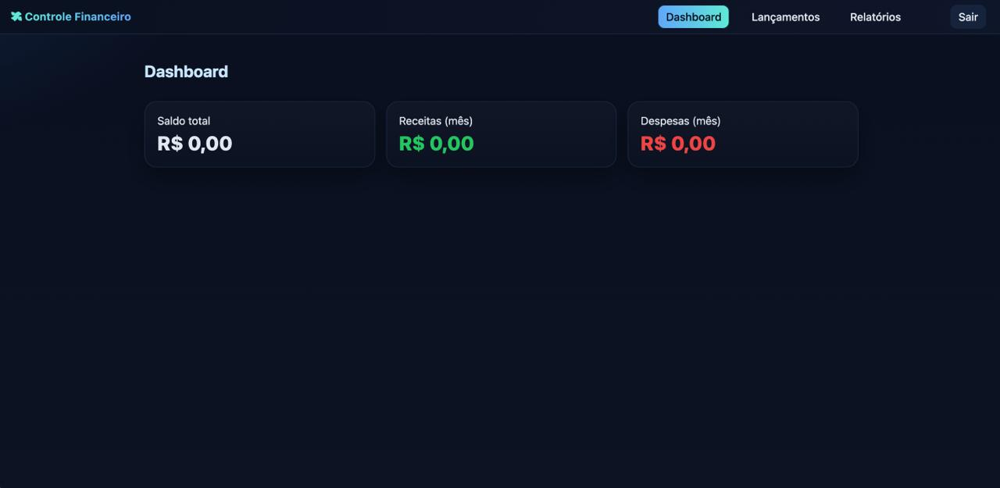
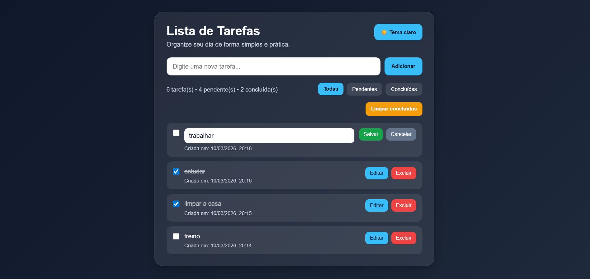
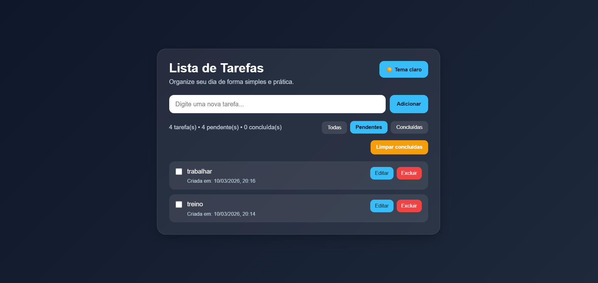
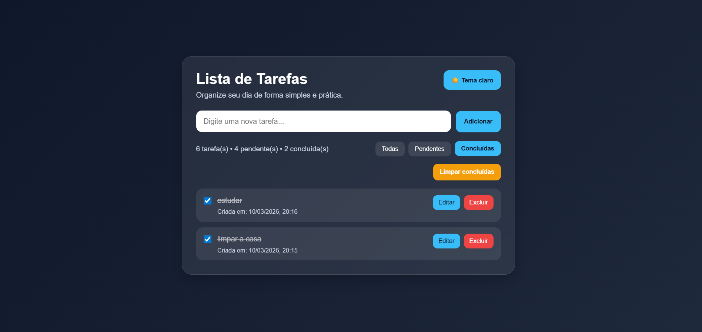
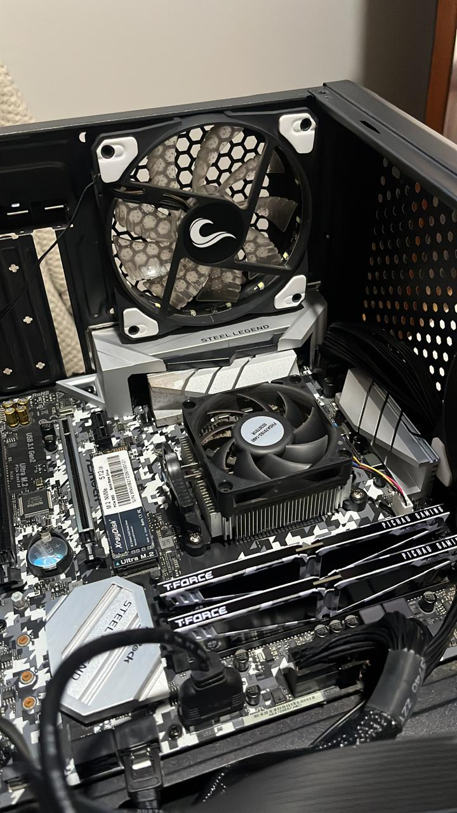
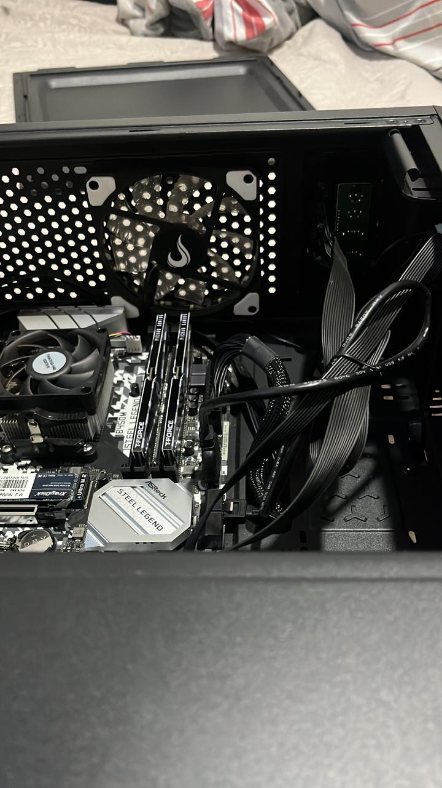
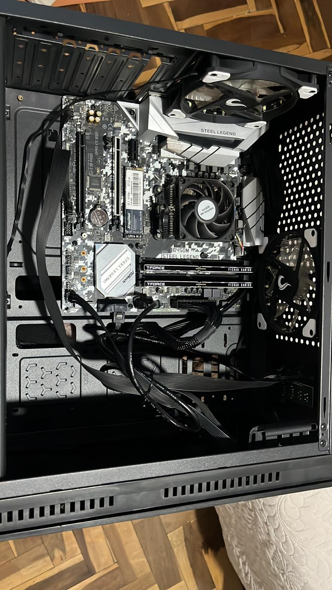

Sistema de Controle Financeiro
Sistema web para gerenciamento de receitas e despesas, com autenticação de usuários, registro de lançamentos e dashboard financeiro. Desenvolvido com
Engenharia de Software • 4º período • UniBrasil • Curitiba/PR
Atualmente estou cursando Engenharia de Software, onde venho desenvolvendo conhecimentos em programação, lógica e sistemas. Paralelamente, atuo na manutenção e otimização de computadores, unindo a teoria e prática para oferecer soluções eficientes e bem estruturadas.
Bacharelado em Engenharia de Software — UniBrasil
4º período • Curitiba/PR
Formação focada em desenvolvimento de software, estruturas de dados,
banco de dados e construção de aplicações web modernas.


Sistema web para gerenciamento de receitas e despesas, com autenticação de usuários, registro de lançamentos e dashboard financeiro. Desenvolvido com



Aplicação web de gerenciamento de tarefas focadas em organização, produtividade e uma experiência simples e eficiente para o usuário. Desenvolvida com
Desenvolvimento de aplicações web utilizando HTML, CSS e JavaScript, com foco em lógica de programação, organização de código e projetos práticos.
Desenvolvimento de APIs simples em PHP e integração com banco de dados MySQL, incluindo autenticação de usuários e registro de informações em sistemas web.
Manutenção de computadores, formatação de sistemas, limpeza interna, otimização de desempenho e configuração de redes domésticas.


